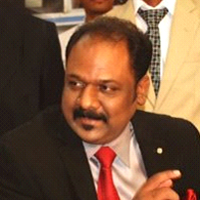

Shri A. Nagarajan, I.A.S. (Retd.) (Former UPSC Interview board Member)
He served as a Special Chief Secretary and Development Commissioner to the Government of Tamilnadu.
During his career span, Shri Nagarajan was associated with various institutions/Government Bodies/Corporations interalia
housing & Urban Development Department, Tamilnadu Powerfin Development Corporation Ltd., Tamilnadu Industrial
Investment Corporation Ltd. He served as a Special Commissioner of Treasuries & Accounts, Member Secretary of
State Planning Commission, Additional secretary, Industries - Government of Tamilnadu, Commissioner - Regional Provident
Fund, Chennai, Executive Director of National seeds Corporation.
Shri Ramesh Kumar Khanna, I.A.S. (Retd)
An Indian Administrative Service (Retired) officer with rich experience of over 32 years in administration and
management and known for efficiency, planning, coordinating and monitoring capabilities. Retired as Additional
Chief Secretary, Government of Tamil Nadu. His Diverse educational qualifications and experiences boasted
him with Strong knowledge and experience in Project Management and handling of Public Private Partnership, Skill
Development, Social and Industrial sector projects.
Shri M.G.Devasahayam I.A.S
He is an Economist cum Administrator with a distinguished career spanning 40 years, with direct and first-hand
experience in the working and ethos of Indian Army, Civil Services, Government, Public & Private Sector, Political
system as well as NGOs. He is a dynamic thinker, analyst and writer. Several of his articles have been published in
Newspapers across the Country and prestigious publications. The thrust in his writing has been Reforms, Resource
Efficiency and Good Governance as well as topics like Freedom, Democracy and Corruption. He has also made presentations
on many of these subjects in National and International Seminars. Shri Devasahayam was given special assignment as
Member of Government of India’s High Power Committee on Agricultural Policies and Programmes that went into the issue of
“transforming Agriculture into an Industry”. He had the privilege of writing the theme chapter of the Report, contents
of which has been influencing Agriculture development policies of successive Governments at the Centre.
Dr. P. A. Ramiah, IAS, Former Chairman, Teachers Recruitment Board (TRB)
He is an officer of the Indian Administrative Service, earned a doctoral degree in Child Labour, Dr. Ramiah has taken a
lot of initiatives in improving the performance of students in Secondary and Higher Secondary Board Examinations during
his tenure as the Secretary, Government of Tamil Nadu. Besides this, while holding several administrative positions like
Additional District Collector, District Collector, Secretary to Government in Charge of Tamil Development and Culture
etc., he followed all the possible means to devote himself in perking up the quality of Education.
Shri Naresh Gupta IAS
An 1973 batch IAS officer allotted to Tamil Nadu Cadre. He held important posts including that of Secretary to
Governor, Home Secretary and Public Secretary. He was the Chief Electoral Officer, Tamil
Nadu. After retirement, he also served as Member, Central Administrative Tribunal. He is an avid writer and his books
include, he has written three books – (1) Electoral Systems & Process in India; (2) The Path to Salvation published
by Bharatiya Vidya Bhavan & (3) Democracy & Human Development in India published by the Publications Division,
GOI.
Shri T.P. Sreenivasan IFS, (Former UPSC Interview board Member),
He has served in the foreign service for 37 years. A former Ambassador of India he is currently executive Vice-Chairman,
Kerala State Higher Education Council, and Director General, Kerala International Centre. T.P. Sreenivasan is a former Permanent Representative of India to the United Nations and Governor for India of the
International Atomic Energy Agency and Ambassador to Austria and Slovenia He has nearly 20 years of
experience in multilateral diplomacy and has represented India at a number of international conferences organised by the
United Nations, the Commonwealth and the Nonaligned Movement. He has chaired several UN Committees and Conferences.
Shri T. Ananthachari IPS (Retd) (Former UPSC Interview board Member),
Former Director-General, Border Security Force, Government of India.
Shri P. K. Hormis Tharakan IPS,
He is an Indian Police Service officer of the Kerala cadre and was chief of the Research and Analysis
Wing (R&AW), India's external intelligence agency, He was also the former Director General of the
Kerala Police. His Excellence include him as one of the advisors to the governor of Karnataka, when the state was
brought under the President's rule prior to Assembly elections in the state in 2008. He was a member of the National
Security Council and was also the Chief Advisor of Strategic Affairs.
Dr. K. Radhakrishnan, IPS
He is an Indian Police Service Officer of the batch of 1983, belonging to the Tamil Nadu Cadre. Currently, he is serving
as the Director General of Police of the Civil Supplies, CID department of Tamil Nadu. Dr. K.
Radhakrishnan also holds a PhD from the Department of Criminology from the University of Madras for seminal research on
‘Tactical and Strategic Police Response to Communal Violence: Coimbatore, a case study’, awarded by the University of
Madras. He received many awards which also include the President's medal for "Meritorious Service". He received
the Queen’s Award for Innovation in Police Training and Development in 2002 and 2004 and is the only officer from all
of Commonwealth Nations to have won the distinguished bi-annual award consecutively.
Shri Sanjay Arora IPS
He is an officer of Tamil Nadu 1988 batch who is presently posted as ADGP Administration. He was
Superintendent of Police (SP), Special Task Force, Sathyamangalam,. He was on deputation with the Indo-Tibetian Border
Police before becoming the Commissioner of Police, Coimbatore city . He was Deputy Inspector-General of Police,
Villupuram Range, and was Deputy Director of Vigilance and Anti-Corruption before becoming IG, Railways
Shri S K Dogra IPS (Retd) Former DGP
Retired police officer (IPS, retired). Author, trainer, motivator.
Human Resource & Security Advisor to a well-known group of companies. He has served in different capacities in
various parts of Tamil Nadu .
Dr. C. Sylendra Babu IPS
He is an Indian Police Service Officer of the 1987 batch belonging to the Tamil Nadu cadre. He is serving as the
Additional Director General of Police of the Coastal Security Group, Tamil Nadu. He holds a PhD in Criminology from
the University of Madras. He holds a Bachelor of Science in Agriculture degree from the Agricultural College and
Research Institute, Madurai and majored in agriculture from the Tamil Nadu Agricultural University, Coimbatore. Later,
he obtained a Bachelor of General Law and Master of Arts in Population Studies from the Annamalai University and was
awarded a PhD for his thesis on "missing children" by the University of Madras. In 2013, he obtained a Master of
Business Administration degree in Human Resources. Currently, he is pursuing a course in computer science and cyber
crime investigation.
Shri M Ravi I.P.S
He is an Additional director General of Police\Chief Vigilance Officer of Aavin, his stints in various posts he held
and served made him among the awardees of President’s Police Medal for distinguished service.
Shri K. Jayanth Murali I.P.S
He is currently posted as ADGP, Traffic Planning Cell
Shri Manjunatha, IPS
A 1991-batch IPS officer, Shri Manjunatha served as Superintendent of Police of Dharmapuri and Villupuram districts,
besides as SP, Security Branch CID, and Vigilance and Anti-Corruption. He served as Deputy Inspector General of Police
of Coimbatore Range and had been Commissioner of Police, Tirunelveli City. Consequent to his promotion as Inspector
General of Police, Shri Manjunatha served as IG, Crime Branch CID and IG North Zone. Presently he is posted as
ADGP.
Smt. R.Bhagya Devi, I.R.S, Commissioner of Central Excise
Shri P.K. Sarangi I.R.S
He is an 1973 batch officer, he is the Former Director General in Income Tax department.
Shri Stephen Mervin Alexander, (PMG,CCR)
An Indian Postal Service (IPoS) Officer of 1987 batch, is currently the Joint Secretary, in Dept. of Atomic Energy.Shri K M Ravindran, IIS Addl. Director General Press Information Bureau (Southern
Region)
He belongs to the 1986 batch of Indian Information Service (IIS). He began his career in Doordarshan, New Delhi, and
held various positions from News Editor to Director level. he is also working as the Special Correspondent of the All
India Radio for Sri Lanka and Maldives 
Brigadier (Retired) Rahul K Bhonsle, (Former UPSC Interview board Member)
He is an Indian army military veteran with 30 years active field experience in counter militancy and terrorism
operations. Post retirement since 2006, he has combined his military expertise with extensive study of future trends in
conflict to build a personal repertoire of workshops, seminars, books, magazine and newspaper articles which are
internationally acknowledged. He is presently Director of Asia Security-Risks.com, a South Asian security risk and
knowledge management consultancy which specializes in future scenarios, military capacity building and conflict trends
in South Asia. He has worked on the entire gamut of issues related international security to include an overall
assessment of nontraditional security threats to India conceptualised in, “Asymmetrical Challenges to India’s National
Security”. “Securing India: Assessment of Defence and Security Capabilities,” outlines defence modernisation strategies
for India. His recent works relate to terrorism include, “Beyond Bin Laden: Global Terrorism Scenarios,” &
“Countering Transnational Terrorism,”. A number of recommendations from these books have been incorporated in government
policy on counter terrorism in India.
Shri Theodore Baskaran (Former UPSC Interview board Member),
Theodore Baskaran, a film historian, began his career in Tamilnadu Archives and then entered civil service in Indian
Postal Service as Divisional Superintendent and served as the "Special Officer For War Efforts" in Shillong during
the Indo-Pakistan War of 1971. His book won the Golden Lotus award from the President of India. Baskaran was a member of
the Advisory Board of National Film Archives. He taught a course on Tamil Cinema in the University of
Michigan. His Stint in cinema made him the jury for National film awards. Baskaran has lectured on cinema
in Western Australian National University, Princeton and University of Chicago. He is a graduate of the
National Defense College.
Commodore R.S. Vasan (Retd)
He has a distinguished military service of over 34 years. His shore assignments include command of two naval air
stations, maritime air squadron, Air Crew Examiner, member of the faculty at the College of Naval warfare and Chief
Staff Officer of the Southern Naval Command at Kochin, India. Prior to his retirement he was the Regional Commander of
the Eastern Region of the Indian Coast Guard. Presently he is steering the Maritime Security Programme at the Observer
Research Foundation a major Indian think tank and also is Head of Strategy and Security Studies, Centre for Asia
Studies, Chennai.
Shri R K Upadhyay IFoS Principal Chief Conservator of Forests (Research & Education).
Shri PALANISAMY, IIS (Director, All India Radio)
Shri Gautham Dey I.Fo.S, (Retd) – (Former UPSC Interview board Member)
Former Principal Chief Conservator of Forests (Head of Forest Force)
Shri Ramkumar IFoS (Retd)
He was a Former Principal Chief Conservator Of Forests Deputed To The Tamil Nadu Magnesite Limited as Its
Chairman-Cum-Managing Director.
Shri Rama Kant Ojha, IFS., (Retd)
He was a Former Principal Chief Conservator Of Forests (Research And Education)
Shri Ashutosh Samant Singhar, IFS(Retd.)
He was a Former Additional principle Chief Conservator of Forests and posted as Joint Managing Director, Tamil Nadu Tea
Plantation Corporation Limited.
Dr. R. Thilagaraj , Ph.D (Former UPSC Interview board Member),Former Director Centre for Cyber Forensics &
Information Security, University of Madras
Former Professor & Head Department of Criminology, University of Madras, Chennai and had specialized in Psychology
of Crime and Delinquency ,Research Methodology and he is also Vice President, International Society of Criminological
Psychology, Mexico. He has published various articles in the spectrum of criminology and he has also written books on
Human Rights and Criminal Justice Administration, Crime in railways, Social deviance and victimization of children,
Goal behavior of delinquents.
Dr. Utham Kumar Jamadhagni
Associate Professor & Head of Department of Defence and Strategic Studies with his Interests and specialization in
International Relations, Maritime Security, Conflict Analysis/Non-Traditional Security. He has published a book on" The
Unrecognised Peril: Threats to Environmental Security".
Shri Muraleedhran VR
He is currently Professor of Economics , Indian Institute of Technology (Madras) He has his post
doctoral exposure and research in Takemi Fellow in International Health, Harvard School of Public Health, Boston (USA), Rockefeller Foundation Research Fellowship in History of Malaria, Rockefeller Archive
Center (New York) he is also South Asia Visiting Scholar, Center for International Development, Queen Elizabeth House, University of Oxford and he has his research interests in Healthcare economics, History of Healthcare
in India and Environmental Health Policy which helped him to serve as a Member of the Mission Steering Group of the National Rural Health Mission (Govt of India). He has also served as member of sub-groups on Health,
Planning Commission of India and currently he is also co-Vice President of the Health Economics Association of India.
Shri Sudarsan Padmanabhan (Department of Humanities and Social Sciences, Indian Institute of
Technology)
He received his PhD from University of South Florida and worked at Kenyon College, Ohio, USA, before
joining the Department of Humanities and Social Sciences, Indian Institute of Technology, Madras. He specializes in
social and political philosophy, and Indian philosophy and culture. His research interest lies in the confluence of law,
democracy, and ethics in the public sphere. He has published in these domains in various journals and edited volumes
including the Routledge Handbook of Cosmopolitanism Studies.
Smt. K. Miriam Samuel
She is currently the Head of the Department of Social Work and has specialization in Psychiatric Social Work,
International Social Work and Gender studies with her field of research in Gender Issues, Community Health and Disasters
and social work with her achievement in Establishing the centre for International Social Work.
Shri Suresh Babu M
Associate Professor Dept. of Humanities and Social Sciences and his profound areas of Areas of Research are Applied
Macroeconomics, Industrial Economics, Trade and Development. he was a Member WTO Forum on non-agricultural
sector, Government of Kerala and also Consultant for the Asian Development Bank for identifying “Growth
Potentials in Kerala’s Industrial Sector” . he is also undergoing projects on Monitoring Sarva Siksha Abhayan in Tamil
Nadu, Productivity and Efficiency of Manufacturing Enterprises in the Unorganized Sector, ICSSR, Micro and Small
Enterprises and Innovation: Issues and Challenges, Trade Liberalization and Employment: Evidence from Indian Industry
Economic Reforms, Industrial Structure
Dr. Selvaraj
He is retired professor and Head, Department of Economics in Madras Christian College with 36 years of teaching
experience to his credit. During his illustrious carrier, he acquired wide-spread knowledge on research by undertaking
various research projects focused on Women Development for “The Tamil Nadu Corporation for Development of Women,
Government of Tamil Nadu” and also for other reputed corporate institutes. He also served as Consultant Economists for
several projects sponsored by World Bank. With keen interest on research, he was enrolled as a research supervisor
recognized by University of Madras for M.Phil and Ph.D scholars. He was mentor for many projects of Government of India,
Centre for Entrepreneurial and Economic Development and Madras Christian College. He executed his academic and
administration support as a Member of Board of Studies, Member of Academic council and Member of Ph.D Doctoral
committee. Since 1988, Selvaraj was enthroned with administrative positions served as a co-ordinator, Dean, Chairman,
Vice-president, and Director for several departments and colleges. He has worked extensively on his major publications
for “Macro Economics, NCERT, “Mastering Economics” and “Consumer Price Index”.
Shri Sultan Ahmed Ismail
He is an Eminent Indian Soil Biologist and Ecologist. He has published 65 papers in National and
International Journals & Proceedings also He is honored with a D.Sc. in Zoology from the University
of Madras in 2001 for his research in the field of Soil Ecology –Earthworms – Waste Management He is also the Managing
Director of Eco science Research Foundation. He is father of vermiculture.
Dr M. Venkataraman,
He was Associate Professor in Addis Ababa University, Ethiopia. At present he is Assistant Professor,
Department of Defence and Strategic Studies, and his research interests are mainly on systemic and nation state’s
concerns of security and foreign policy elaborations. He follows eclectic methodology and triangulation of
analysis and interpretations. He is comparative with respect to issues of Africa and Southeast Asia with
particular focus on China.
DR S. Srikantaswamy (Former UPSC Interview board Member),
He is Associate Professor in the department of Environmental Science and His research interest lies in Environmental
Science, (Environmental EarthScience) Biomaterials, Nanomaterials Carbon nanotubes).
N. Vijayamohanan Pillai Ph. D. (Former UPSC Interview board Member),
He is an Associate Professor at Centre for Development Studies (CDS) Trivandrum. He is a well-known
scholar in Econometrics, Marxian Economics and Mathematical Economics and his field of research interests are Energy
Economics, Applied Statistics and Development Studies.
Dr Suresh R,
He is an Associate Professor, Department of Political Science, University of Kerala, He had published Four Books and
has also published research articles in reputed national and International Journals. He is working on a UGC Major
Research Project ‘Maritime Security of India: The Coastal Security Challenges and Policy Options’. He has been selected
as Associate in the Indian Institute of Advanced Study, Shimla and is working on the project titled The Tibetan Issue
and India - China Border Problem; A Security Perspective. He is the Hon. Director of the prestigious V K Krishna
Menon Study Centre for International Relations, Thiruvanathapuram.
Smt. Sangeetha Menon Ph.D. (Former UPSC Interview board Member)
She is a Professor at the National Institute of Advanced Studies, in the Indian Institute of
Science and joined NIAS in 1996, with particular interest in consciousness studies in the larger context of
science-spirituality-art interface issues. She is a philosopher-psychologist. Professor Sangeetha Menon
has been working in Consciousness Studies for over eighteen years. Her core research interests are Indian ways of
thinking in classical philosophical schools, Indian psychology and Indian dramaturgy, and current discussions on
consciousness. She has received national awards for her achievements in the field of consciousness and Indian
contributions. She also received the Young Philosopher Award from the Indian Council of Philosophical Research, for her
research work.
Dr. V. Suryanarayan (Former UPSC Interview board Member)
He was the Senior Professor and founding Director, Centre for South and Southeast Asian Studies,
University of Madras. He is associated with two think tanks in Chennai, the Center for Asia Studies and the Chennai
Centre for China Studies. Prof. Suryanarayan is one of India's leading specialists in South and Southeast Asian Studies
and combines in his teaching and research specialization in history, political science and international relation's He
was a visiting Professor at the Department of History, University of California, Los Angeles; Columbus College,
University System of Georgia; School of International Studies, Jawaharlal Nehru University, New Delhi;
Peradeniya University, Sri Lanka.
Dr.G.P.Ganapathy
He is completed his Doctoral Research in Earthquake Microzonation for Chennai City at Anna University, Chennai. He
served for Centre for Disaster Mitigation and Management, Anna University, Chennai for 8 years as a Scientist and
carried out research studies the field of earthquake hazard assessment, earthquake monitoring, seismic micro-Zonation,
landslide hazard Zonation, Soil Bio Engineering for Slope Stabilization, environment impact assessment and management.
Dr. Ganapathy presented more than 50 research papers in reputed International/National journals, workshops and
conferences and he is Managing Editor and Editorial Board Member for 13 International Journals. Dr. Ganapathy is the
member for the State Disaster Management Plan Core group, consultant for preparation of district level
multi disaster plan, Government of Tamil Nadu. He is the honorary member in the Joint Working Group for Geotechnical
Disaster Management and member in many scientific societies. He is the nominated member for the creation of Disaster
loss database for Tamil Nadu State by UNOPS, Geneva. Dr.Ganapathy is invited member of the Working Committee on
Landslide Hazard Mitigation, formulated by the National Disaster Management Authority, Government of
India. He also contributed to the Global Assessment Report 2011 on Disaster Risk Reduction. He offered technical support
in two major publications published by Government of India viz. Seismic Micro-Zonation methodology, Landslide Hazard
Zonation Atlas of India. His ongoing funded research projects are Development of Early warning System for shallow
landslides, funded by ISRO, and Updating the loss database for the state of Tamil Nadu funded by UN-ISDR, Geneva.
Prof. L.Venkatachalam
He is a Professor. He is Visiting Fellow, Environmental Economics and Natural Resources Group, Wageningen
University, the Netherlands. Visiting Fellow, University of British Columbia, Vancouver, Canada. Visiting Fellow,
Cornell University, Ithaca, United States of America, He has been a visiting faculty at the Indian Institute of
Technology, Madras School of Economics (MSE) and Indian Maritime University, Chennai. He works on
environmental economics with a focus on non-market valuation, environmental policy and climate change. He has held
Fulbright-Nehru Senior Research Fellowship, Indo-French Scholars’ Exchange Fellowship and Indo-Canadian Faculty Research
Fellowship and won the Japanese Award for his outstanding Research on Development.
Shri D.V.Gopalappa
He has worked in various capacities at Institute for Social and Economic Change, Bangalore. Currently, he is
Professor in the Economics at University of Mysore with his Area of Specialization in Development Economics and Rural
Development, PRIs, Watershed, Credit, Agriculture, Sericulture. He has a number of Publications in referred journals to
his credit. he has been specializing in Rural Development and Regional Planning. He has been involved in researching
more than half a dozen sponsored research projects on issued of contemporary issue
Dr. S.L.Belagali (Former UPSC Interview board Member),
He joined as a Professor & Co-coordinator to Environmental Science department of Mysore University. He also worked
as the Chairman of Environmental Science department of Mysore University. He completed six research projects for
Mangalore University, Minnesota University USA, ISRO, Bangalore, Ministry of Environment & Forests, New Delhi,
Philips Electronics India Limited Gurgoan and University grants commission, New Delhi. He also worked as BOE, BOS, BOA
member/Chairman of Mysore University & other Universities in Karnataka & other States. He is a member of
Selection Committee for NCERT, CFTRI etc. staff. He was also the Academic Council member of Mysore University for two
years. He has carried out the confidential works for Orissa Public Service Commission, UGC, UPSC etc. He is a member of
UGC assessment committees. He is also a Local Sectional Secretary of Environmental Science for Indian Science Congress
meeting to be held in January 2016 at Mysore University, Mysore.
Dr. R. Manivannan Professor & Head Department of Politics and Public Administration University of
Madras
He is a passionate research scholar who has chaired many a seminar and contributed a lot to the field of research and
education. He was known especially for his prodigious publication of a book which talks about the genocidal attacks
that aimed at ethnic cleansing of the Sri Lankan Tamils from Eelam. His eloquence on Tamil Eelam tragedy attracted the
attention of UN council to deliberate the gravity of the problems. 
Prof. N. Abul Faiz is Head of the Department, Dept. of Visual Communication
He is also Founder and Director of AF School of News Reading. He is an Advisor of few reputed and prestigious colleges
and schools of India and member of the board of studies, Guest faculty in NIFT (National Institute of Fashion
Technology) and Visiting Faculty for Media Courses of reputed colleges in India and is a Resource Person for Personality
Development & Effective Communication Courses.
Dr. V. Muralidharan
He is currently the Associate Professor and Head Department of Defence and Strategic Studies. His area of Specialization
includes National Security Studies. He is the Associate Member of BODIES Institute For Defence Studies And
Analysis, New Delhi and also Member of Evaluation Board of Many Academic Bodies Including Jawaharlal Nehru
University, New Delhi.
Shri S.Nagalsamy IAAS
He was a member of Tamil Nadu Electricity Regulatory Commission and was Principal accountant general for Tamil
nadu and Pondicherry
Shri E.Gopal, (Retd.)
strong>Senior Sub Editor of The Hindu and practicing lawyer post retirement. He is also working as Spl.
Correspondent for Asian Tribune, a web daily. He is the president of The Hindu Newspaper Employees Union and also the
president of The Indo Sri Lankan Journalists Friendship Association which exchanges journalist groups between both
nations. He had also served in various government committees.
Shri Deepalan Saju renowned environmentalist
Shri Rama Subramaniyam Reknowned journalist in South Indian Media
Shri M Gunasekaran, Editor at News 18 TV.
Smt. Kavitha Muralidharan
She is an Associate Editor of India Today and has previously worked as Head of the Reporting Department
at the Hindu and Special Correspondent at Deccan Chronicle. She has also worked at several other leading publications
including The Week, India Today and News Today. She has covered important developments in politics and other spheres in
Tamil Nadu and has written features on various issues including health, cinema, literature, environment and human rights
issues. Kavitha is the winner of the Press Institute of India - International Red Cross award for humanitarian reporting
in conflict situations for her coverage of the Sri Lanka war. She has also authored several books in Tamil and English.
Shri Muralidharan Kasi Viswanathan
He is currently senior correspondent at BBC TAMIL.